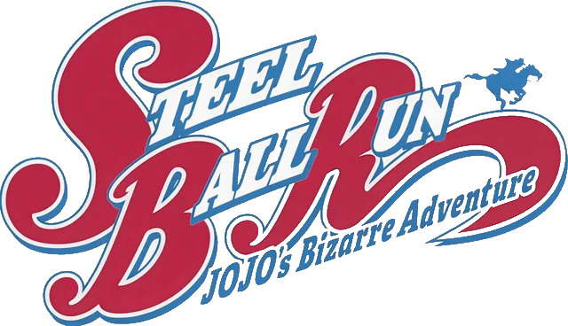
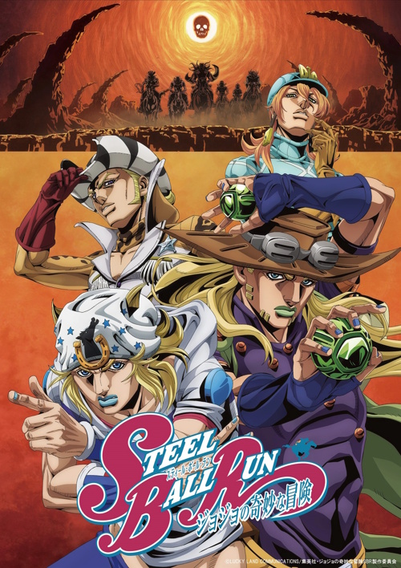

Bemutató Weboldal
Miért különleges?
- Alkotója: A mangát Hirohiko Araki írta és rajzolta, aki a JoJo's Bizarre Adventure teljes
sorozatának megalkotója.
- Készülési ideje: A manga 2004. január 19-én jelent meg először, és 2011. április 19-én fejeződött
be. Összesen 24 kötetből áll.
- Egyedi történetvilág: A korábbi JoJo-részekhez képest teljesen új történelmi környezetet,
karaktereket és egy alternatív történetszálat mutat be.
- Népszerűsége: A rajongók körében a JoJo egyik legnépszerűbb és legelismertebb része, sokan az egész
sorozat legjobbjának tartják.
- Anime-adaptáció: A nagy népszerűség miatt 2025-ben hivatalosan bejelentették az anime elkészítését,
amely 2026. március 19-én debütált a Netflixen.

Steel Ball Run Promo Art